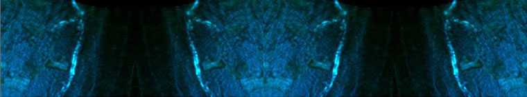

|  |
| POSITIONS |
|
Postdoc Position—Light Emitting Boron Biomaterials—Fraser Lab—UVA The Department of Chemistry at the University of Virginia invites applications for a Postdoctoral Research Associate in materials chemistry. This is a one-year appointment; however, the appointment may be renewed for an additional two, one-year terms contingent upon available funding and satisfactory performance. The completion of a Ph.D. degree in Chemistry or a related discipline by the appointment start date is required. Candidates must be capable of performing organic, inorganic, polymer and bioconjugate synthesis, nanofabrication, and associated characterization of the compounds prepared. They must be proficient in evaluating the results of synthetic and materials fabrication studies, troubleshooting and devising new experiments, and assisting with the organization of data and the preparation of papers, reports and proposals. Group members are expected to pursue opportunities (e.g. resources, awards, fellowships, proposals, presentations) and to consider practical uses of the materials that are prepared. Postdoctoral Research Associates must work well with the research team and an extensive network of biomedical and materials collaborators, prepare samples and assist with measurements when needed for collaborative studies, and assist, mentor and help supervise graduates and undergraduates in the laboratory with synthesis, characterization procedures, analysis and interpretation of data. Teaching experience and enthusiasm for mentoring and learning are a plus. Participation in group meetings, literature review, discussion and evaluation of scientific findings, planning future research directions, and lab maintenance and improvement is required. To apply, please submit a candidate profile on-line through Jobs@UVA (https://jobs.virginia.edu) and electronically attach the following: cover letter, curriculum vitae, and the contact information for three (3) references; search on posting number 0613116. Review of applications will begin November 2, 2013; however, the position will remain open until filled. Questions regarding this position should be directed to: Questions regarding the Candidate Profile process or Jobs@UVA should be directed to: The College of A&S and the University of Virginia is an Equal Opportunity/Affirmative Action Employer. We are committeed to developing diversity in faculty and staff and welcome applications from women, minorities, veterans, and persons with disability. To apply for this position, go to Posting Number 0613116 at Jobs@UVA. Posted 10/23/13 Undergraduate Research Position Available We invite one or two outstanding first or second year undergraduates to join our research team each year, typically in the fall semester. We serve as mentors and strong advocates for ambitious and dedicated students who are expected to apply for research fellowships and awards and to conduct research ~10/week during the school year and full time in the summers. (See the Fraser Lab People>Alumni page for examples of outstanding former undergraduates from our group, many of whom were successful in winning prestigious UVA and nationally competitive research awards.) Interested candidates are welcome to submit a CV, names of three references, a transcript, and brief statement of interest to Prof. Fraser for consideration. Posted: 8/28/09 |
|